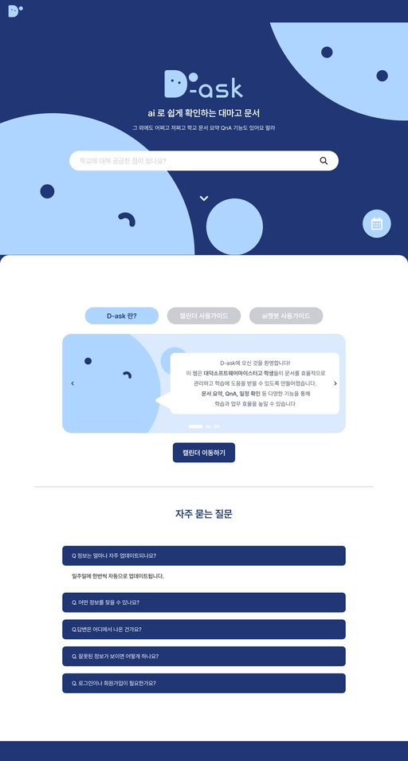
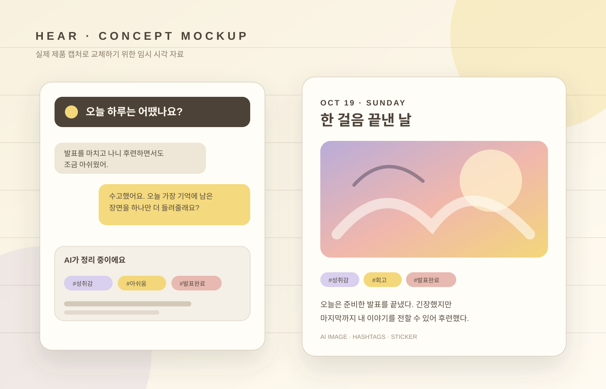

01영상 분석
OpenCV
쉽게 말하면
카메라나 사진 속 사물을 컴퓨터가 읽고 분석하도록 돕는 영상 처리 도구입니다.
D-ask 외 CV 프로젝트의 이미지 전처리에 활용AI · Computer Vision
대덕소프트웨어마이스터고등학교 2학년.
현실의 시각 데이터를 이해하고, 모델을 동작하는 소프트웨어로 연결하는 과정을 공부합니다.
“빛나는 너는 이미 이겼다.”
모델 학습에서 API와 영상 처리까지, Computer Vision 시스템을 구성하는 기술을 프로젝트에 적용합니다.
카메라나 사진 속 사물을 컴퓨터가 읽고 분석하도록 돕는 영상 처리 도구입니다.
D-ask 외 CV 프로젝트의 이미지 전처리에 활용데이터의 패턴을 학습해 예측하는 AI 모델을 만들고 훈련하는 도구입니다.
이미지 분류·인식 모델 학습에 활용AI 기능을 웹이나 앱에서 호출할 수 있도록 연결 통로를 만드는 도구입니다.
D-ask의 데이터와 AI 기능을 API로 연결어떤 컴퓨터에서도 같은 설정으로 프로그램이 실행되도록 환경을 상자처럼 묶어줍니다.
팀원이 같은 환경에서 서비스를 실행하도록 구성코드가 어떻게 바뀌었는지 기록하고, 여러 사람이 만든 작업을 안전하게 합치는 도구입니다.
팀 프로젝트의 버전 관리와 협업에 활용카드에 마우스를 올리거나 키보드로 선택해 쉬운 설명을 확인하세요.
실제 화면과 근거를 바탕으로 프로젝트의 문제, 결과, 기술 선택과 제가 맡은 일을 구분해 기록합니다.

5종의 학교 데이터를 수집하고, BFS 탐색과 JSON 정규화로 AI가 사용할 수 있는 데이터 파이프라인을 구축했습니다.

일기 기반 해시태그, AI 이미지, AI 스티커 생성 기능을 구현해 대화로 만든 일기를 시각적 기억으로 확장했습니다.
기초 역량을 검증한 국가기술자격과 실제 AI 문제 해결 결과로 받은 수상 기록입니다. 카드를 눌러 증빙과 상세 내용을 확인할 수 있습니다.
마우스를 올리면 쉬운 설명이, 누르면 증빙과 상세 내용이 표시됩니다.